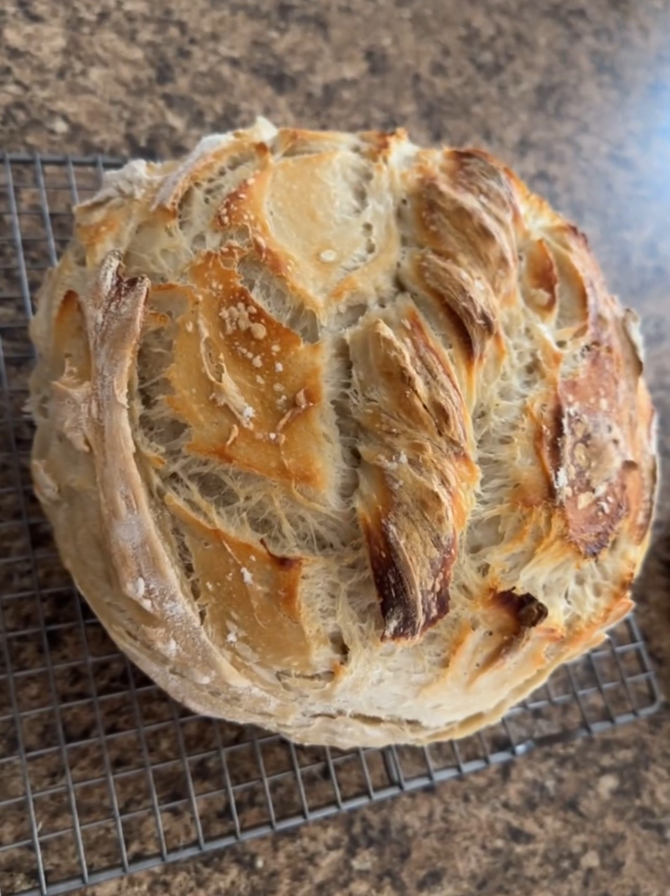

Sourdough Bread
Ingredients
- 125 grams active sourdough starter
- 325 grams warm filtered water
- 12 grams extra virgin olive oil
- 120 grams unbleached flour (all-purpose or bread flour)
- 12 grams salt
- Butter or cooking spray (for greasing the loaf pan)
Directions
- In a large bowl, combine the active sourdough starter and warm filtered water. Mix well using a bread whisk or fork until most of the starter is dissolved.
- Add extra virgin olive oil and honey (or sugar) to the mixture. Stir until evenly incorporated.
- Gradually add unbleached flour to the mixture, followed by salt. Mix until a shaggy dough forms.
- Knead the dough in the bowl for about 3 minutes until it comes together and reaches a consistent texture.
- Cover the bowl with a kitchen towel and let the dough rest for 30 minutes.
- After 30 minutes, perform a series of stretch and folds on the dough. Repeat this process three more times, with 30 minutes of rest in between each set.
- Once the dough has almost doubled in size (about 3-4 hours), transfer it to a lightly floured surface.
- Shape the dough into a large rectangle. Use a lightly floured rolling pin to flatten the dough, working out all of the air bubbles.
- Fold one side of the dough toward the middle, and fold the other side to meet the first side in the middle. Roll the dough tightly into a loaf shape. Pinch and tuck the sides under.
- Place the dough seam side down in a greased 9x5 inch loaf pan.
- Cover the loaf pan with a kitchen towel and let the dough proof for 2 hours, or until it has almost doubled in size and fills the loaf pan.
- Preheat the oven to 375°F (190°C) during the last 30 minutes of proofing.
- Once fully proofed, place the loaf pan in the preheated oven and bake for 35 minutes, or until the bread is golden brown.
- Remove the bread from the oven and immediately brush the top with butter. Allow the bread to cool in the pan for a few minutes, then transfer it to a wire rack to cool completely before slicing. Enjoy!
